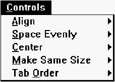
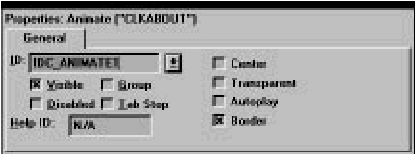
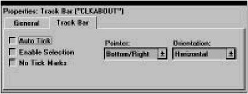

Home
| Search
| CTG
| RTL
| IDDE
| STL
Home
| Search
| CTG
| RTL
| IDDE
| STL
Last update Fri Apr 28 16:30:17 2006
|
Reference 1. Introducing Digital Mars C++ 2. Introducing the IDDE Part 2: Creating an Application with Digital Mars C++ 3. Starting a Project and Defining Workspaces 4. Generating an Application Framework 5. Defining Classes and Their Hierarchies 6. Editing Program Code 7. Adding Look and Feel with Resources 8. Testing an Application Part 3: Learning Digital Mars C++ by Example 9. Introduction to the Tutorial 10. Lesson 1: Create the DOS Application 11. Lesson 2: Generate an Application Framework 12. Lesson 3: Customize the Interface 13. Lesson 4: Add Messages with ClassExpress 14. Lesson 5: Add a Dialog Box with ClassExpress Part 4: More about Creating Programs 15. More about Projects and Workspaces 16. More about Project Build Settings 17. More about AppExpress 18. More about ClassExpress 19. Class Editor Reference 20. Hierarchy Editor Reference 21. Text Editor Reference 22. Using Version Control Part 5: More about Testing Programs 23. Controlling and Configuring the Debugger 24. Commands Available in Debugging Mode Part 6: About Managing Resources 25. ResourceStudio Resource Editor 26. Dialog Editor 27. Menu, Accelerator and String Table Editors 28. Bitmap, Cursor, Icon, and Font Editors 29. Version Information and Custom Resource Editors Part 7: Appendixes A. Expression Evaluation B. IDDE Settings and Command-Line Options C. Using NetBuild |
26. Dialog EditorThis ResourceStudio reference chapter contains details about the commands and options found in the Dialog editor. For an introduction to ResourceStudio, see Chapter 7, "Adding Look and Feel with Resources."Dialog EditorThe Dialog editor (see Figure 26-1) is used to edit dialog resources.
[Figure 26-1 The Dialog editor The Dialog editor displays the dialog box and its controls as they will appear at run time. To add a new control to the dialog box, select a tool from the Tool menu (or from the toolbox), then place the control in the dialog box by clicking and dragging. Controls can be moved and resized by clicking and dragging as well. Commands in the Controls menu can be used to center and align controls. The dialog box can be tested by choosing Test Dialog in the Dialog menu. For more information about using the Dialog editor, see Chapter 7, "Adding Look and Feel with Resources." DialogExpressAs a new dialog resource is created, the DialogExpress dialog box opens (see Figure 26-2). DialogExpress lets you select a predefined dialog box type to use as a starting point for your dialog resource.
[Figure 26-2 DialogExpress Select dialog typeSpecifies a type of dialog box to create as a starting point for the dialog resource.
3-dimensional lookSpecifies that the dialog box and controls should look 3-dimensional.File menu commandsThe File menu (see Figure 26-3) contains commands to save the resource file, edit resource IDs, and perform other miscellaneous functions.
[Figure 26-3 Dialog editor File menu SaveSaves the resource file. If the file is unnamed, this command executes Save As.Save AsOpens a Windows File Save As dialog box, which is used to save the resource file under a new name.Edit Resource IDsOpens the Resource ID Browser dialog box, used to browse and modify resource IDs. For more information about managing resource IDs and using the Resource ID Browser dialog box, see "Managing Resource IDs," in Chapter 7, "Adding Look and Feel with Resources."ClassExpressRuns ClassExpress, passing the filename of the resource file as the project that ClassExpress should open. This command is only enabled if the Dialog editor is running in the right pane of the Browser window.Close EditingCloses the Dialog editor.Edit menu commandsThe Edit menu (see Figure 26-4) contains standard editing commands. You can undo operations, and can cut, copy, paste, and delete single or multiple controls. Note that to select multiple controls, you must press Shift or Control while clicking the second and subsequent controls, or must use the selection tool to drag a box around the controls.
[Figure 26-4 Dialog editor Edit menu UndoUndoes the last Dialog editor operation.RedoRedoes the last action that was undone.CutCopies the selected control to the Clipboard, then deletes it from the dialog box.CopyCopies the selected control to the Clipboard.PasteCopies the control in the Clipboard to the dialog box.DeleteDeletes the selected control from the dialog box.Select AllSelects all controls in the dialog box.Dialog menu commandsThe Dialog menu (see Figure 26-5) contains commands to control the grid, display tab stops, test the dialog, and check for duplicate control IDs.
[Figure 26-5 Dialog editor Dialog menu Grid OptionsOpens the Grid Settings dialog box (see Figure 26-6), used to set grid options.
[Figure 26-6 Grid Settings dialog box WidthSpecifies the grid point horizontal spacing.HeightSpecifies the grid point vertical spacing.Snap to gridIf checked, controls can only be moved to positions which coincide with grid points. When controls are resized, horizontal and vertical sizes are adjusted to multiples of the grid point spacings.Display gridIf checked, the grid is displayed.GridToggles display of the grid.Snap to GridMoves the selected control to the nearest grid point.Display Tab StopsToggles the display of tab stop numbers on controls. Tab order can be adjusted with commands in the Tab Order submenu of the Controls menu.Test DialogRuns the dialog. End testing by clicking on a button with a resource ID of IDOK or IDCANCEL, or by pressing Alt+ F4.Check Duplicate IDsChecks the dialog for duplicate control IDs. If any two items have the same ID, the Resolve Duplicate IDs dialog box opens (see Figure 26-7).
[Figure 26-7 Resolve Duplicate IDs dialog box To resolve duplicate IDs, first click on a number in the Duplicate IDs list. The Used By listbox displays the controls that are using that ID. Click on Resolve One to automatically assign new IDs (with unique values) to the controls. Note that all static text usually shares the same ID; in general, this is acceptable and does not cause conflicts in the application. Controls menu commandsThe Controls menu (see Figure 26-8) contains commands to align, space, and center controls, and to adjust tab order. [Figure 26-8 Dialog editor Controls menu AlignOpens the Align submenu (see Figure 26-9). Before choosing one of these commands, select two or more controls and designate one as the standard by clicking on it while pressing the Control key.
[Figure 26-9 Dialog editor Controls menu Align submenu LeftAligns the left edges of the selected controls with the left edge of the standard.RightAligns the right edges of the selected controls with the right edge of the standard.TopAligns the top edges of the selected controls with the top edge of the standard.BottomAligns the bottom edges of the selected controls with the bottom edge of the standard.Space EvenlyOpens the Space Evenly submenu (see Figure 26-10). Before choosing one of these commands, select three or more controls.
[Figure 26-10 Dialog editor Controls menu Space Evenly submenu VerticalSpaces the selected controls evenly in the vertical direction.HorizontalSpaces the selected controls evenly in the horizontal direction.CenterOpens the Center submenu (see Figure 26-11). Before choosing one of these commands, select one or more controls.
[Figure 26-11 Dialog editor Controls menu Center submenu VerticalCenters the selected controls vertically within the dialog box.HorizontalCenters the selected controls horizontally within the dialog box.Make Same SizeOpens the Make Same Size submenu (see Figure 26-12). Before choosing one of these commands, select two or more controls and designate one as the standard by clicking on it while pressing the Control key.
[Figure 26-12 Dialog editor Controls menu Make Same Size submenu VerticalChanges the vertical size of the selected controls to that of the standard.HorizontalChanges the horizontal size of the selected controls to that of the standard.BothChanges both the vertical and horizontal sizes of the selected controls to those of the standard.Tab OrderOpens the Tab Order submenu (see Figure 26-13). Before choosing one of these commands, select a single control.
[Figure 26-13 Dialog editor Controls menu Tab Order submenu FirstMoves the selected control to the front of the tab sequence.ForwardMoves the selected control forward in the tab sequence.BackMoves the selected control back in the tab sequence.LastMoves the selected control to the end of the tab sequence.Tool menu commandsThe Tool menu (see Figure 26-14) lets you select tools used to place controls in the dialog box. After selecting a tool, click and drag in the dialog box to place and size the new control. Once the control is placed, the Select tool is selected automatically.
[Figure 26-14 Dialog editor Tool menu SelectSelects the Select tool. With the Select tool, you can select individual controls. You can select groups of controls by clicking in the dialog box outside of any control and dragging a box over the controls to be selected.PictureSelects the Picture tool, used to place a static image (a box, frame, or icon) in the dialog box.TextSelects the Text tool, used to place static text in the dialog box.Edit ControlSelects the Edit Control tool, used to place an edit control (a textbox) in the dialog box.Group BoxSelects the Group Box tool, used to place a group box in the dialog box.Push ButtonSelects the Push Button tool, used to place a push button in the dialog box.Check BoxSelects the Check Box tool, used to place a check box in the dialog box.Radio ButtonSelects the Radio Button tool, used to place a radio button in the dialog box.List BoxSelects the List Box tool, used to place a listbox in the dialog box.Combo BoxSelects the Combo Box tool, used to place a combobox in the dialog box.Vertical Scroll BarSelects the Vertical Scroll Bar tool, used to place a vertical scroll bar in the dialog box.Horizontal Scroll BarSelects the Horizontal Scroll Bar tool, used to place a horizontal scroll bar in the dialog box.Toolbar commandsThe Dialog editor toolbar (see Figure 26-15) provides quick access to frequently used menu commands. Left-click on these buttons, except where noted.
[Figure 26-15 Dialog editor toolbar
ToolboxThe Dialog editor toolbox (see Figure 26-16) provides quick access to the tools available in the Tool menu, plus tools for adding custom controls and user controls (not pictured). For more information, see "Tool menu commands," earlier in this chapter.
[Figure 26-16 Dialog editor toolbox Dialog box propertiesThe dialog box has three pages of properties (four if the target platform is Windows 95). The General properties are shown in Figure 26-17.
[Figure 26-17 Dialog box General properties The Text field is used to specify the dialog box title. Styles properties are shown in Figure 26-18.
[Figure 26-18 Dialog box Styles properties Look properties are shown in Figure 26-19.
[Figure 26-19 Dialog box Look properties The dialog box font can be set by clicking on Set Font and selecting a font from the dialog box which opens. The Reset Font button resets the dialog box font to the system default. If the target platform is Windows 95, the dialog box has an extra page of properties, as shown in Figure 26-20.
[Figure 26-20 Dialog box Win95 properties See your Windows 95 documentation for more information. Picture propertiesPictures (static images) have properties as shown in Figure 26-21.
[Figure 26-21 Picture properties Select a Type from the drop-down list. If you select Icon, you must also select an icon from the Icon drop-down list. Text propertiesStatic text properties are shown in Figure 26-22.
[Figure 26-22 Text properties Type the static text into the Text textbox. Newlines can be entered by typing Ctrl+ Enter. Edit control propertiesEdit controls have two pages of properties. The General properties are shown in Figure 26-23.
[Figure 26-23 Edit control General properties Edit control Styles properties are shown in Figure 26-24.
[Figure 26-24 Edit control Styles properties Group box propertiesGroup box properties are shown in Figure 26-25.
[Figure 26-25 Group box properties Push button propertiesPush button properties are shown in Figure 26-26.
[Figure 26-26 Push button properties Check box propertiesCheck box properties are shown in Figure 26-27.
[Figure 26-27 Check box properties Radio button propertiesRadio button properties are shown in Figure 26-28.
[Figure 26-28 Radio button properties Listbox propertiesListboxes have two pages of properties. The General properties are shown in Figure 26-29.
[Figure 26-29 Listbox General properties Listbox Styles properties are shown in Figure 26-30.
[Figure 26-30 Listbox Styles properties Combobox propertiesComboboxes have two pages of properties. The General properties are shown in Figure 26-31.
[Figure 26-31 Combobox General properties Combobox Styles properties are shown in Figure 26-32.
[Figure 26-32 Combobox Styles properties Scroll bar propertiesScroll bar properties are shown in Figure 26-33.
[Figure 26-33 Scroll bar properties Custom control propertiesThese pages let you work with custom controls. A custom control resides in a DLL that implements the standard functions for manipulating and displaying the control. ResourceStudio can display a custom control as it will appear in your application.Custom controls have two pages of properties. The General properties are shown in Figure 26-31. Use the ID field to edit a custom control's resource ID. To change its style attributes, click Style; this displays the dialog box that the control DLL implements for that purpose.
[Figure 26-34 Custom Control General properties Custom control Extra properties are shown in Figure 26-32. You edit the initialization data for custom controls in this page.
[Figure 26-35 Custom Control Extra properties Working with custom controlsInstalled custom control DLLs provide ResourceStudio with the information it needs to display the control as it will appear in the application, and open the DLL's control-specific dialog box, with which you specify the control's attributes.To place a custom control in a dialog box:
User control propertiesThese pages let you work with user controls. A user control is any control that either is not implemented in a DLL, or whose implementation is non-standard. ResourceStudio can only display a user control as a box. ResourceStudio treats VBX controls as user controls.User controls have two pages of properties. The General properties are shown in Figure 26-36. You use this page to edit a user control's resource ID or change its style bits.
[Figure 26-36 User Control General properties User control Extra properties are shown in Figure 26-32. You edit the initialization data for user controlsin this page.
[Figure 26-37 User Control Extra properties Working with user controlsTo place a user control in a dialog box:
Animate control propertiesAnimate control properties are shown in Figure 26-38. [Figure 26-38 Animate control properties Tree view propertiesTree view properties are shown in Figure 26-39.
[Figure 26-39 Tree View properties Tab control propertiesTab controls have two pages of properties. The General properties are shown in Figure 26-40.
[Figure 26-40 Tab Control General properties Tab Control properties are shown in Figure 26-41.
[Figure 26-41 Tab Control properties List view control propertiesList view controls have three pages of properties. The General properties are shown in Figure 26-42.
[Figure 26-42 List View Control General properties List View properties are shown in Figure 26-43.
[Figure 26-43 List View properties Look properties are shown in Figure 26-44.
[Figure 26-44 List View Look properties Hotkey propertiesHotkey properties are shown in Figure 26-45.
[Figure 26-45 Hotkey properties Track Bar propertiesTrack bars have two pages of properties. The General properties are shown in Figure 26-46.
[Figure 26-46 Track Bar General properties Track Bar properties are shown in Figure 26-47.  [Figure 26-47 Track Bar properties Progress control propertiesProgress control properties are shown in Figure 26-48.
[Figure 26-48 Progress control properties Up/Down control propertiesUp/Down controls have two pages of properties. The General properties are shown in Figure 26-49.
[Figure 26-49 Up/Down control General properties Up/Down properties are shown in Figure 26-50.
[Figure 26-50 Up/Down properties
|